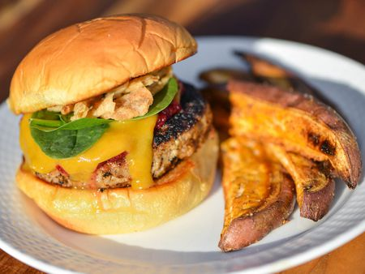

Sweet and Spicy Turkey Burgers

Here at my house, we love burgers and are always striving to make the best one possible. Red meat is expensive, though, and we only get it as a special treat these days. An alternative burger meat that is just as delicious if cooked right is turkey. Turkey is one of my favorite burger meat for its tendancy to be juicy. Here's my favorite recipe for sweet and spicy turkey burgers!
Here's the ingredients:
- Turkey meat (enough for everyone)
- Cajun seasoning
- Cinnamon sugar
- Cumin
- Garlic salt
- Sea salt
- Beaten Egg
How to prepare
- Put the meat into a bowl and lay out your spices
- Add cajun seasoning, about 2 tbs for 3 burgers, then add 1 tbs of the rest of the spices
- You want the cajun seasoning to be slightly more represented than the cinnamon sugar
- Add cumin sparingly, unless your'e like me and love it
- Beat the egg and mix with the meat, it will get very sticky and slimy but this is intended
- Cook over a charcoal fire in a cast iron skillet, youll know when the meat is done when the interior is a light brown
- Top with a slice of colby jack cheese and let sit in fire until melted
- I usually spice and butter the buns and put them on the fire until toasted, but this is optional
And thats how you do it, I know this guide seems a bit less specific, but this one is mainly smelling the raw spiced meet until it smells right, I know if you try it a few times you'll get it just right for you! Experimentation is key for this dish.